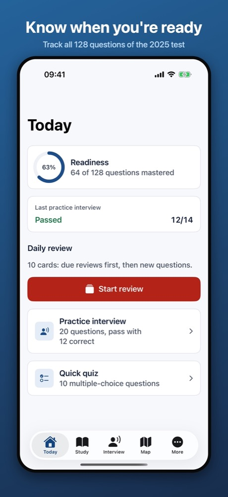
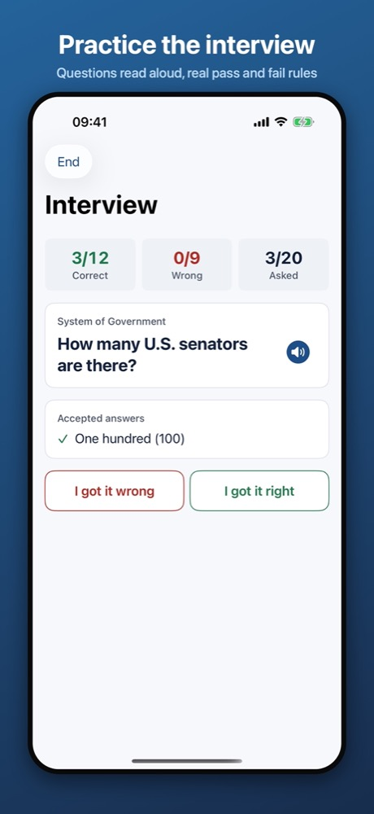
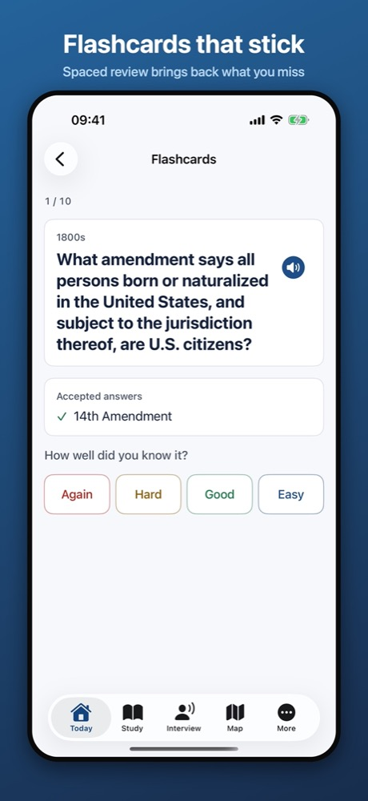
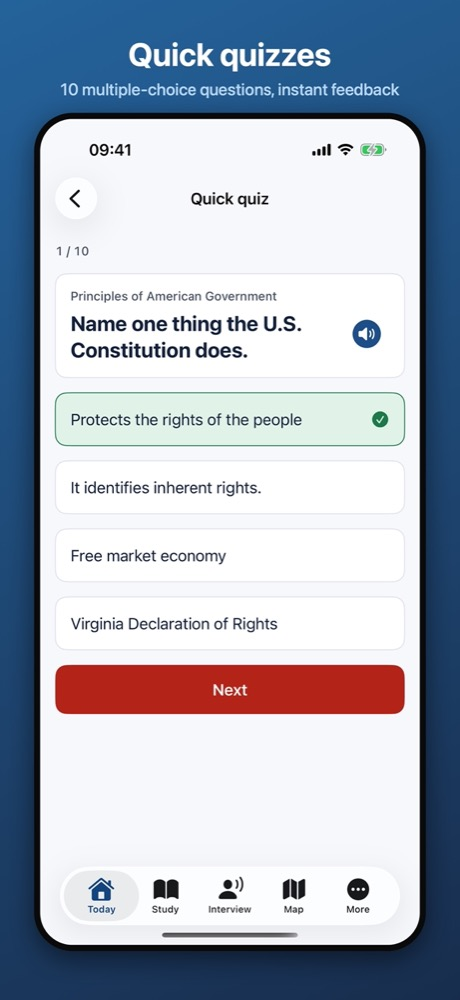
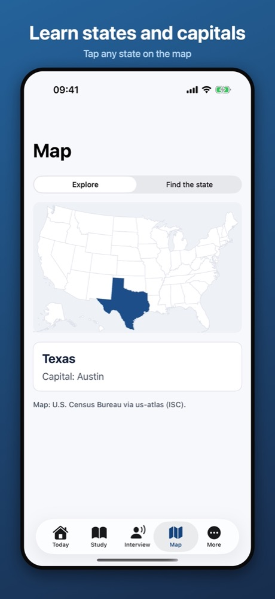
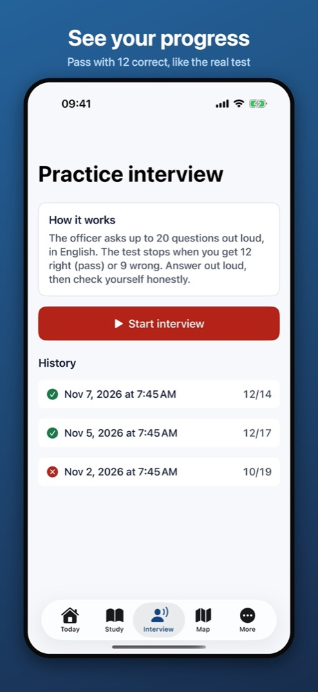

Civics Prep
U.S. Citizenship Test 2025 · Examen de ciudadanía 2025 · English / Español






Civics Prep is an independent study app. It is not affiliated with U.S. Citizenship and Immigration Services (USCIS) or any government agency. Questions come from the public USCIS study materials at uscis.gov.
Practice all 128 questions of the 2025 civics test, then take a practice interview that follows the real rules: questions are read aloud, 12 correct answers pass and 9 wrong answers end the interview.
- Flashcards with spaced review and 10-question quizzes
- Answers for your state, senators, representative and governor
- Interactive map of the states and capitals
- Reading and writing vocabulary for the English test
- Every question in Spanish as an unofficial study aid
- Works offline, no account; your progress stays on your device
Free with ads. Civics Prep Pro is a one-time purchase that removes ads and unlocks unlimited practice interviews and the map game.
Practique las 128 preguntas del examen de educación cívica 2025 y haga una entrevista de práctica con las reglas reales. Todas las preguntas tienen traducción al español como ayuda de estudio no oficial; la entrevista real es en inglés.
Civics Prep es una aplicación independiente y no está afiliada a USCIS ni a ninguna agencia del gobierno.